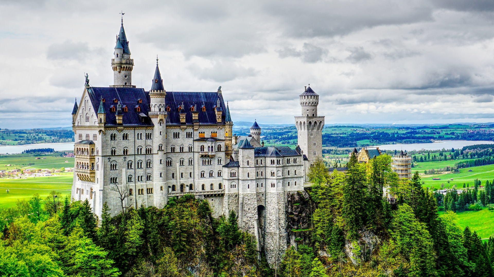
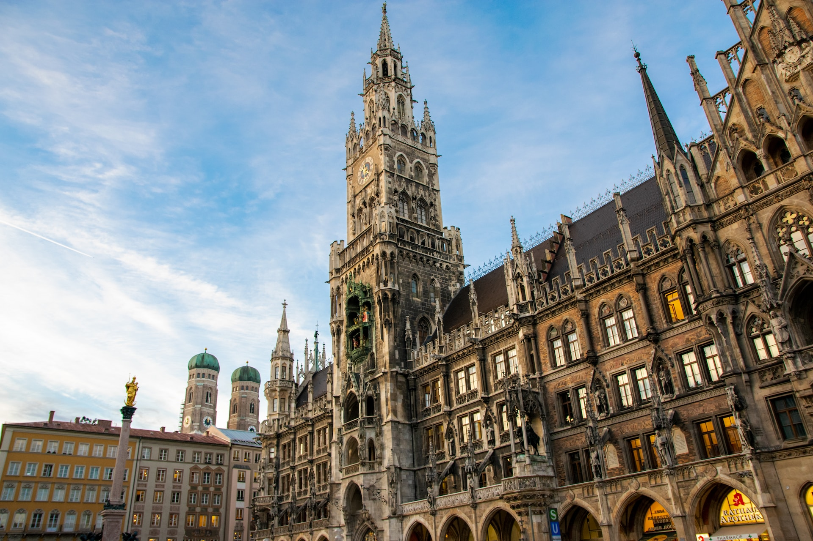
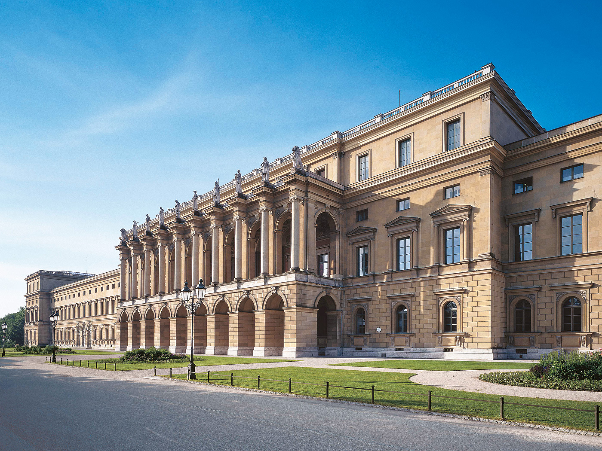
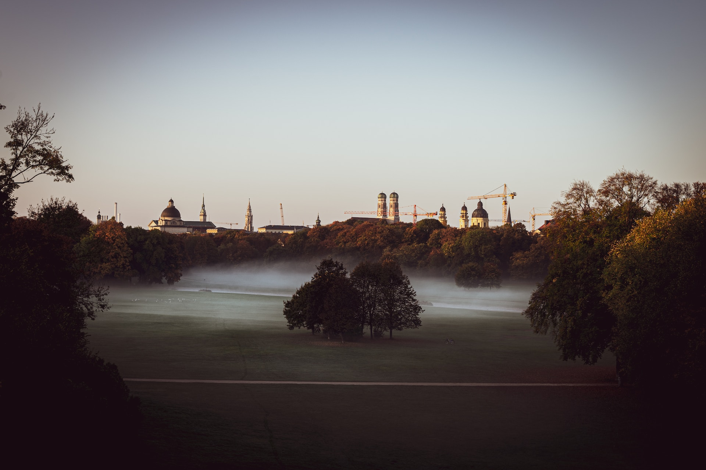
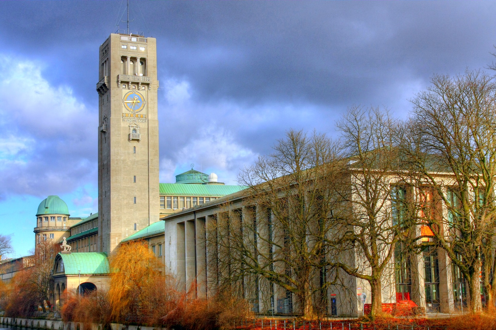

Munich is one of the most vibrant cities in Germany, offering a unique mix of rich culture, stunning architecture, and stunning scenery. It is the perfect destination for those who want to explore a city that is rich in history, and where you can enjoy great food, drinks, and hospitality. The Bavarian capital city is well-known for its famous Oktoberfest, which attracts millions of tourists each year, but there is much more to Munich than just beer and bratwurst. The city is steeped in history, with landmarks such as the Residenz Palace and the Marienplatz offering a glimpse into Munich's past. One of the most remarkable features of Munich is its stunning architecture. The city is home to a vast number of beautiful buildings, such as the Neuschwanstein Castle, which inspired Walt Disney's iconic fairytale castle. The city's art galleries, museums, and opera houses are among the finest in the world. For anyone planning a visit to Munich, here we have listed 7 things you must see when visiting.
1. The iconic Neuschwanstein Castle
Neuschwanstein Castle, situated in the beautiful city of Munich, Germany, is a true architectural marvel. It's no surprise that this castle has inspired many fairy tales, thanks to its towering spires and majestic structure that seem to defy gravity. Built by the enigmatic King Ludwig II of Bavaria in the late 19th century, this magnificent castle has become a symbol of German architecture and culture, and a testament to the artistic prowess of its builder. At first sight, visitors to Neuschwanstein Castle will be enchanted by its beauty and its setting. Located atop a steep hill and surrounded by forests, it boasts sweeping views of the stunning Bavarian Alps, with the winding Lech River running below. The castle itself features numerous towers, turrets, and balconies that look as if they've been plucked from the pages of a fairy tale. It's easy to see why Neuschwanstein Castle is the most visited castle in all of Germany. Aside from its awe-inspiring design, there are numerous reasons why visiting Neuschwanstein Castle is an experience not to be missed. For starters, the castle is steeped in history, as it was the home of King Ludwig II, who commissioned its construction as a way of escaping the public eye and indulging in his fantasies. The castle was built in a remarkable 17 years, using innovative architectural techniques that were far ahead of their time. And yet, even though it was never completed, Neuschwanstein Castle stands as one of the most impressive buildings in Europe.
2. Marienplatz
One of the primary reasons that make Marienplatz worth visiting is its remarkable historical significance. The square was first established in 1158 and named after the Virgin Mary, whose golden statue still stands atop the tower of the Neo-Gothic town hall. The ornate architecture of the Rathaus, or town hall, makes it one of the most recognizable landmarks in the city, featuring the famous Glockenspiel, which chimes twice a day and attracts thousands of onlookers. Beyond its stunning buildings and monuments, Marienplatz is a bustling center for social life in Munich. Visitors can expect to see a wide variety of street performers, buskers, and market stalls selling handmade goods and delicious treats. From local beers to homemade pretzels and pastries, there's something to please every palate. Marienplatz also serves as a transportation hub, connecting visitors to all corners of the city, making it an ideal starting point for exploring all the city has to offer. Another reason why Marienplatz is worth visiting is for the breathtaking views that can be experienced from the square's tower. Climbing to the top of the Rathaus offers a panoramic view of the entire city of Munich, and one can't help but feel a sense of awe at the beautiful sights. Marienplatz is a place where one can truly feel the energy of Munich. From the hustle and bustle of daily life to the historical significance and awe-inspiring architecture, the square is a must-see destination for anyone visiting the city.
3. Munich Residenz
The Munich Residence, located in the heart of Munich, Germany, is one of the most stunning and impressive historical sites in the country. With its Baroque architecture, extensive art collection, and fascinating history, the Munich Residence is truly a must-visit attraction for anyone visiting Munich. Constructed in the 17th century, the Munich Residence was originally the home of the Bavarian monarchs, serving as the center of their court and government. Over the centuries, it has undergone extensive renovations and expansions, resulting in a complex of buildings, courtyards, and gardens that span more than 10,000 square meters. The architecture of the Munich Residence is breathtaking, featuring elaborate decorations, ornate ceilings, and grand staircases. Visitors will be transported back in time as they wander through the stunning reception rooms, galleries, and chambers. One of the highlights of the Munich Residence is the Antiquarium, a room decorated with beautiful frescoes and home to an impressive collection of ancient sculptures. The art collection at the Munich Residence is also noteworthy, featuring works by some of the most prominent artists of the Baroque and Rococo periods. The collection includes masterpieces by artists such as Rubens, Rembrandt, and Raphael, as well as many stunning pieces of decorative arts. In addition to its beautiful architecture and art collection, the Munich Residence has a fascinating history that makes it well worth visiting. Over the centuries, it has served as the site of royal weddings, state visits, and other important events. It has also survived numerous wars and political upheavals, making it a testament to the resilience of the Bavarian people.
4. Oktoberfest

The annual Oktoberfest festival held in Munich, Germany is one of the most renowned cultural events in the world, attracting millions of tourists every year. This traditional celebration of German culture, beer, and cuisine has been held annually for over 200 years, and its significance continues to grow each year. The atmosphere at Oktoberfest is truly unique and has been attracting visitors from around the globe to experience the authenticity and vibrancy of this extraordinary event. From the aroma of the delicious, traditional Bavarian dishes to the lively music and cultural performances, the experience of Oktoberfest is nothing short of an unforgettable adventure. This annual celebration is more than just a beer festival - it is a full-fledged cultural event that honors the best of German culture. Oktoberfest offers visitors an opportunity to experience the rich cultural heritage of the German people. The atmosphere is bustling with colorful traditional costumes, delicious local food and drink, and amazing musical performances that showcase the region's cultural talents. The famous Oompah music that reverberates through the festival halls and outdoor beer gardens is sure to transport visitors back to the festive times of old.
5. Englischer Garten
The English Garden in Munich is an idyllic green paradise located in the heart of the city. Stretching across an area of 910 acres, this beautifully landscaped park is one of the largest urban parks in the world and a must-visit destination for locals and tourists alike. This magical oasis offers something for everyone - be it families, solo travelers, or even a romantic getaway. As you stroll through the lush green gardens, you can't help but feel rejuvenated by the freshness of the air and the peaceful ambiance. The vast open meadows provide ample space for outdoor activities such as jogging, cycling, and picnicking, and the serene lakes make for the perfect spot to soak in some sun and relax. If you're a keen horticulturist or nature lover, The English Garden has a lot to offer. The park's beautifully manicured gardens and floral arrangements will leave you in awe. In springtime, you can enjoy a vast array of blooming flowers, including tulips, daffodils, and hyacinths. Summer months bring lush greenery and tree-lined pathways that provide much-needed shade and a serene environment for long walks.
6. Deutsches Museum
Established in 1903, this iconic museum boasts a collection of over 100,000 artifacts that spans across science, technology, engineering, and mathematics (STEM). Deutsches Museum is one of the largest and most prominent museums in the world, covering a whopping 55,000 square meters of exhibition space. With an extensive range of displays, the museum offers visitors an exciting and insightful experience of the wonders of science and technology. From aviation to energy, communication to astronomy, medicine to automation, Deutsches Museum has something to offer for everyone. The museum is dedicated to the pursuit of knowledge and discovery and provides visitors with an immersive experience, engaging and educating both young and old alike. With exhibits ranging from massive locomotives and engines to telescopes and microscopes, there is no shortage of awe-inspiring objects on display. Deutsches Museum has become a symbol of the brilliance and determination of German science and technology. From early engineering feats, like the original engines designed by Nikolaus August Otto and Carl Benz, to contemporary developments like solar energy and virtual reality technology, this museum is a testament to human achievement and creativity.
7. Viktualienmarkt

Nestled in the heart of Munich, Viktualienmarkt is a must-see attraction that has captivated locals and tourists alike for more than 200 years. The market offers visitors a truly unique experience as they browse through the colourful stalls, smell the aroma of fresh flowers, and sample an array of delectable delicacies. Viktualienmarkt has something to offer everyone, from fresh fruits and vegetables to meat and cheese. It's the perfect place to get your fill of Bavarian specialties, like the traditional Weisswurst breakfast, accompanied by a cold, crisp glass of local beer. One of the most enchanting things about the market is the fact that it's steeped in history. Once the location of a farmers' market, it quickly became a hub of trade for local craftsmen, traders, and artists. Today, it is home to over 140 vendors and is a central point of the city's culinary and cultural scene. As you walk through the bustling stalls, the vibrant colours and sounds transport you to a world of discovery, a sensory adventure that invigorates all of your senses. From the finest cheeses to freshly baked bread, to exotic spices and trinkets, there is always something new and exciting to uncover at Viktualienmarkt. In addition to its bustling marketplace, the location is a wonderful place to spend a day relaxing in the sunshine or taking in the beauty of Munich's iconic landmarks. You can spend an entire afternoon sipping a beer in one of the market's cosy beer gardens, which are surrounded by blooming flowers, fragrant herbs, and colourful fountains.